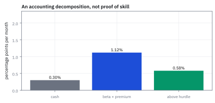

15.2 Capital Asset Pricing Model (CAPM) — Beta, Alpha, and Required Return
ผลตอบแทนที่ได้จากการเกาะตลาดซื้อได้ในราคาถูก ต้องหักส่วนนั้นออกก่อน ส่วนที่เหลือจึงมีสิทธิ์ถูกเรียกว่าฝีมือ
บริษัทจัดการกองทุนแห่งหนึ่งจ้างผู้จัดการกองทุนสองคน แต่ละคนเลือกหุ้นเข้าพอร์ตของตัวเอง สิ้นปีกรรมการต้องตัดสินว่าจะให้โบนัส “ฝีมือ” กับใคร โบนัสนี้ควรจ่ายให้ผลตอบแทนที่มาจากการเลือกหุ้นเก่งจริง ไม่ใช่ผลตอบแทนที่ใครก็ได้มาฟรี ๆ
ของที่รู้ของปีนั้น (ตัวเลขสมมติ):
- ตลาดหุ้นทั้งตลาดขึ้น $R_m=10\%$ วัดด้วยดัชนี S&P 500 ซึ่งเป็นตัวเลขที่สรุปราคาหุ้นใหญ่ 500 ตัวของสหรัฐ
- เงินฝากระยะสั้นที่แทบไม่มีความเสี่ยงให้ดอกเบี้ย $R_f=2\%$ หน้านี้เรียกสิ่งนี้สั้น ๆ ว่า “เงินสด”
- ผู้จัดการ A ทำได้ 6% พอร์ตมี beta 0.5
- ผู้จัดการ B ทำได้ 12% พอร์ตมี beta 1.5
beta บอกว่าพอร์ตขยับตามตลาดแรงแค่ไหน beta 1.5 แปลว่าเมื่อตลาดขึ้นหรือลง 1% พอร์ตมักขึ้นหรือลงราว 1.5% ส่วน beta 0.5 ขยับแค่ครึ่งเดียวของตลาด
กรรมการเสนอให้โบนัสกับ B เพราะ $12\%/6\%=2$ คือ B ทำได้สองเท่าของ A ข้อเสนอนี้ถูกไหม?
ลองตอบก่อนเปิดเฉลย
ไม่ถูก เพราะผลตอบแทนแบบ B ใครก็ทำได้โดยไม่ต้องเลือกหุ้นเลย เครื่องมือคือกองทุนดัชนี ซึ่งเป็นกองทุนที่ถือหุ้นทุกตัวในดัชนี จึงได้ผลตอบแทนเท่าดัชนี วิธีลอก B คือเอาเงินทุน \$1 ไปซื้อกองทุนดัชนี แล้วยืมเงินอีก \$0.5 ที่ดอกเบี้ย 2% มาซื้อเพิ่ม รวมลงดัชนี \$1.5 ต่อทุน \$1 จึงได้ beta 1.5 เท่ากับ B ผลตอบแทนต่อทุน \$1 คือ
B ทำได้ 12% จึงต่ำกว่าของที่ลอกได้ฟรีอยู่ $12-14=-2$ จุด ส่วน A ลอกได้ด้วยการวางเงินครึ่งหนึ่งในดัชนี อีกครึ่งถือเงินสด ได้ $0.5\times10\%+0.5\times2\%=6\%$ เท่ากับที่ A ทำได้พอดี
ผลตอบแทนจริงลบผลตอบแทนที่ลอกได้ด้วย beta เดียวกัน เรียกว่า alpha alpha ของ A คือ $6-6=0\%$ ของ B คือ $-2\%$ ถ้าจะให้โบนัสใคร A ควรมาก่อน B
ภาพรวมก่อนลงสูตร
โจทย์ข้างบนมีบทเรียนเดียว ผลตอบแทนของพอร์ตใด ๆ แบ่งได้เป็นสองส่วน ส่วนแรกมาจากการ “เกาะตลาด” คือพอร์ตขึ้นลงตามตลาดเพราะถือหุ้นคล้ายตลาด ส่วนนี้ใครก็ซื้อได้ในราคาถูกด้วยกองทุนดัชนีกับเงินสด ส่วนที่สองคือสิ่งที่เหลือ ส่วนที่สองนี้เท่านั้นที่ควรได้ค่าธรรมเนียมฝีมือ
CAPM (Capital Asset Pricing Model) คือ model ที่ให้ไม้บรรทัดสำหรับแยกสองส่วนนี้ ไม้บรรทัดนั้นเป็นเส้นตรงชื่อ Security Market Line (SML) แกนนอนของเส้นคือ beta แกนตั้งคือผลตอบแทนที่ “ควรได้” จากการเกาะตลาดอย่างเดียว
ในรูปด้านล่าง เส้นน้ำเงินคือ SML ของปีในโจทย์ เส้นนี้ผ่านสองจุดที่รู้แน่ จุดแรกคือ beta 0 หมายถึงถือเงินสดล้วน ได้ 2% จุดที่สองคือ beta 1 หมายถึงถือดัชนีล้วน ได้ 10% slope ของเส้นจึงเป็น $(10-2)/(1-0)=8$ และเขียนเส้นได้เป็น $2+8\beta$
ทุกจุดบนเส้นลอกได้ด้วยการผสมดัชนีกับเงินสด A อยู่บนเส้นพอดี B อยู่ใต้เส้น ระยะแนวตั้งจากจุดของผู้จัดการถึงเส้นคือ alpha
หน้านี้จะทำต่อทีละขั้น เริ่มจากวัด beta และ alpha จากข้อมูลจริงด้วย OLS (วิธีลากเส้นตรงให้ใกล้จุดข้อมูลที่สุด) แล้วแยกให้เห็นว่าขั้นไหนเป็นแค่พีชคณิต ขั้นไหนเป็นข้อสมมติของ CAPM จากนั้นพิสูจน์ว่าทำไมความเสี่ยงที่ตลาดจ่ายค่าตอบแทนให้คือ beta ไม่ใช่ SD ถามว่า alpha ที่เห็นเป็นโชคหรือฝีมือ และจบที่การตั้งราคาโครงการลงทุนหนึ่งโครงการ ซึ่งเป็นจุดที่คนใช้เส้นผิดบ่อยที่สุด
รูป — Security Market Line และ alpha คือระยะห่างจากเส้น
ศัพท์ที่ใช้ในหัวข้อนี้
- Capital Asset Pricing Model (CAPM)
- model ที่บอกว่า ผลตอบแทนคาดหวังของสินทรัพย์ใด ๆ ส่วนที่เกินเงินสด เท่ากับ beta คูณส่วนที่ตลาดให้เกินเงินสด เขียนเป็น $\mu_i-R_f=\beta_i(\mu_m-R_f)$ ใช้ตั้งผลตอบแทนขั้นต่ำ และแยกส่วนที่มาจากการเกาะตลาดออกจากส่วนที่เหลือ
- ผลตอบแทนคาดหวัง
- ค่าเฉลี่ยของผลตอบแทนที่คาดว่าจะได้ ถ้าสถานการณ์เดิมเกิดซ้ำหลาย ๆ ครั้ง เขียนเป็น $\mu=\mathbb E[R]$ ต่างจากผลตอบแทนจริงของช่วงใดช่วงหนึ่ง
- Excess return
- ผลตอบแทนลบผลตอบแทนของเงินสดในช่วงเดียวกัน $R-R_f$ บอกว่าการยอมรับความเสี่ยงให้อะไรเพิ่ม เทียบกับนั่งถือเงินสดเฉย ๆ
- Beta
- ตัวเลขที่บอกว่าสินทรัพย์ขยับตามตลาดกี่เท่า คิดเป็น slope ของเส้นตรงที่ลากผ่านจุดข้อมูล โดยแกนนอนคือ excess return ของตลาด แกนตั้งคือ excess return ของสินทรัพย์ เท่ากับ covariance กับตลาดหารด้วย variance ของตลาด ใช้กำหนดขนาด hedge และวัดความเสี่ยงส่วนที่ตลาดจ่ายค่าตอบแทนให้
- Alpha
- จุดตัดแกนตั้ง (intercept) ของเส้นเดียวกัน คือผลตอบแทนที่เหลือหลังหักส่วนที่ beta อธิบายได้ ใช้ตั้งคำถามว่ามีฝีมือหรือไม่ แต่ตัวเลขเดียวยังไม่ใช่หลักฐาน มักเรียกว่า Jensen's alpha
- Hurdle
- ผลตอบแทนขั้นต่ำที่ต้องทำให้ได้ก่อนจะนับว่าเก่ง ตาม CAPM คือ $R_f+\beta(\mu_m-R_f)$ ซึ่งคือผลตอบแทนที่ลอกได้ด้วยดัชนีกับเงินสด
- Short และ hedge
- short คือยืมของมาขาย แล้วซื้อคืนทีหลัง จึงได้กำไรเมื่อราคาลง hedge คือถือฝั่งตรงข้ามเพื่อหักล้างความเสี่ยง เช่น short ดัชนีเพื่อลบส่วนที่หุ้นขยับตามตลาด
- Security Market Line (SML)
- เส้นตรงระหว่างผลตอบแทนคาดหวังกับ beta ตาม CAPM ใช้กับสินทรัพย์ทุกตัว ไม่ว่าจะเป็นหุ้นเดี่ยว โครงการ หรือพอร์ต
- Sharpe ratio
- ผลตอบแทนที่ได้เกินเงินสด หารด้วย SD $(\mu-R_f)/\sigma$ บอกว่าได้ผลตอบแทนส่วนเกินเท่าไรต่อความผันผวนหนึ่งหน่วย
- Capital Market Line (CML)
- เส้นตรงระหว่างผลตอบแทนคาดหวังกับ SD ลากจากเงินสดผ่านพอร์ตตลาด slope ของมันคือ Sharpe ratio ที่สูงที่สุดที่ทำได้ ใช้ได้เฉพาะพอร์ตที่ผสมเงินสดกับตลาดเท่านั้น
- Idiosyncratic risk
- ความผันผวนส่วนที่ไม่เกี่ยวกับตลาด เช่น ข่าวเฉพาะของบริษัทเดียว คือ $\varepsilon$ ใน regression ส่วนนี้หายไปเองเมื่อถือหุ้นหลายตัว CAPM จึงไม่จ่ายค่าตอบแทนให้ ส่วนที่เกี่ยวกับตลาดเรียก systematic risk
สัญลักษณ์และหน่วย
| สัญลักษณ์ | ความหมาย | หน่วย |
|---|---|---|
| $R_i,\ R_m,\ R_f$ | ผลตอบแทนของสินทรัพย์ $i$ ของตลาด และของเงินสด ในช่วงเดียวกัน | % ต่อช่วง |
| $\mu_i,\ \mu_m$ | ผลตอบแทนคาดหวัง $\mathbb E[R_i]$ และ $\mathbb E[R_m]$ | % ต่อช่วง |
| $\beta_i,\ \alpha_i$ | slope และ intercept ของ regression บน excess return | ไม่มีหน่วย และ % ต่อช่วง |
| $\varepsilon_i$ | ส่วนที่ตลาดอธิบายไม่ได้ | % ต่อช่วง |
| $\sigma_m,\ \sigma_\varepsilon,\ \sigma_{im}$ | SD ของตลาด SD ของ $\varepsilon$ และ covariance ของ $R_i$ กับ $R_m$ | % และ %² |
| $N_h$ | ขนาดที่ต้อง short ดัชนีเพื่อ hedge | USD |
| $P,\ X$ | ราคาวันนี้ และเงินที่สินทรัพย์จ่ายในอีกหนึ่งปี | USD |
| $\rho$ | correlation ของสินทรัพย์กับตลาด | ไม่มีหน่วย |
| $\lambda$ | ผลตอบแทนส่วนเกินที่ตลาดให้ ต่อ covariance กับตลาดหนึ่งหน่วย $(\mu_m-R_f)/\sigma_m^2$ | ต่อ covariance หนึ่งหน่วย |
ขั้นที่ 1 — ลองด้วยมือ: ของที่ลอกได้ฟรีของแต่ละคน
โจทย์ให้อะไรมาบ้าง: ตัวเลขชุดเดียวกับโจทย์เปิดเรื่อง
- ตลาดได้ $R_m=10\%$ และเงินสดได้ $R_f=2\%$
- A: beta 0.5 ทำได้ 6%
- B: beta 1.5 ทำได้ 12%
คำถามที่ยุติธรรมไม่ใช่ “ใครได้มากกว่า” แต่เป็น “ถ้าไม่มีฝีมือเลย แค่ผสมกองทุนดัชนีกับเงินสดให้ได้ beta เท่ากัน จะได้เท่าไร” เพราะการผสมแบบนั้นใครก็ทำได้ในราคาถูก
วิธีผสมคือวางเงินสัดส่วน $\beta$ ของทุนในดัชนี และที่เหลือ $1-\beta$ เป็นเงินสด ถ้า $1-\beta$ ติดลบ แปลว่ายืมเงินสดมาซื้อดัชนีเพิ่ม เรียกผลตอบแทนของพอร์ตผสมนี้ว่า $R_{\text{copy}}$ แล้วจัดรูปให้เห็นส่วนที่เกินเงินสด
คำตอบ: ของที่ลอก B ได้คือลงดัชนี 150% ของทุน โดยยืมเงินสดมาอีก 50% ได้ 14% B ทำได้ 12% จึงต่ำกว่าของฟรี 2 จุด ของที่ลอก A ได้คือลงดัชนีครึ่งหนึ่ง ถือเงินสดอีกครึ่ง ได้ 6% เท่ากับที่ A ทำได้จริง
ผลตอบแทนที่ลอกได้นี้คือเกณฑ์ขั้นต่ำที่ต้องผ่านก่อนจะนับว่าเก่ง เรียกว่า hurdle hurdle ของสองคนไม่เท่ากัน เพราะแต่ละคนเกาะตลาดไม่เท่ากัน
ตรวจเองใน 10 วินาที: สูตร $R_f+\beta(R_m-R_f)$ ใช้ได้ทุก beta ใส่ $\beta=1$ ได้ $2+1(8)=10\%$ คือตลาดเอง ใส่ $\beta=0$ ได้ $2+0(8)=2\%$ คือเงินสด สองจุดนี้ต้องอยู่บนเส้นเสมอ ตรงกับจุดน้ำเงินสองจุดในรูป SML
ขั้นที่ 2 — นิยาม: regression ของ excess return บน excess return ของตลาด
โจทย์มือใช้ beta ที่มีคนบอกมา ของจริงไม่มีใครบอก ต้องวัดเองจากข้อมูลย้อนหลัง วิธีคือเก็บผลตอบแทนของตลาดกับของหุ้นหลาย ๆ เดือน วางเป็นจุดบนกราฟ แล้วลาก เส้น OLS ผ่านจุดเหล่านั้น แกนนอน $x$ คือ excess return ของตลาด $R_m-R_f$ แกนตั้ง $y$ คือ excess return ของหุ้น $R_i-R_f$
สัญลักษณ์ในสมการ: $\beta_i$ คือ slope ของเส้น $\alpha_i$ คือจุดตัดแกนตั้ง $\varepsilon_i$ คือส่วนที่เส้นอธิบายไม่ได้ $\mu_i$ และ $\mu_m$ คือผลตอบแทนคาดหวังของหุ้นและของตลาด $\sigma_{im}$ คือ covariance ของหุ้นกับตลาด และ $\sigma_m^2$ คือ variance ของตลาด สมการชุดนี้เป็นแค่นิยามว่าเราวัดอะไร ยังไม่ใช่ทฤษฎี
beta ที่นิยามแบบนี้คือสูตร slope ของ OLS เดิม คือ covariance หารด้วย variance ต่างกันแค่ใช้ค่าจริงของ model แทนค่าที่คำนวณจากตัวอย่าง ส่วน alpha ที่นิยามแบบนี้ทำให้เส้นผ่านจุดค่าเฉลี่ยของข้อมูล เหมือนที่ OLS บังคับเมื่อตั้งอนุพันธ์ตาม intercept ให้เป็นศูนย์
ผลที่ได้มาฟรีมีสองข้อ และไม่ต้องสมมติเพิ่ม เพราะตรวจได้ตรง ๆ จากนิยาม ($R_f$ รู้ตั้งแต่ต้นช่วง จึงเป็นค่าคงที่) ข้อแรก $\mathbb E[\varepsilon_i]=(\mu_i-R_f)-\alpha_i-\beta_i(\mu_m-R_f)=0$ ตามนิยามของ $\alpha_i$ ข้อสอง $\operatorname{Cov}(\varepsilon_i,R_m)=\sigma_{im}-\beta_i\sigma_m^2=\sigma_{im}-\sigma_{im}=0$ ตามนิยามของ $\beta_i$ แปลว่าส่วนที่เหลือ $\varepsilon_i$ ไม่ขยับตามตลาดเลย
ทุกพจน์ต้องเป็นช่วงเวลาเดียวกัน ถ้า $R_i$ เป็นผลตอบแทนรายเดือน $R_f$ ก็ต้องเป็นดอกเบี้ยรายเดือน beta ไม่มีหน่วย เพราะเป็น % หารด้วย % ส่วน alpha มีหน่วย % ต่อช่วงเหมือนผลตอบแทน
ขั้นที่ 3 — ค่าคาดหวัง และข้อสมมติเดียวของ CAPM
สมการ regression จริงเสมอ เพราะมันเป็นแค่นิยาม คราวนี้เราอยากรู้ว่าผลตอบแทนเฉลี่ยของหุ้นขึ้นกับอะไร จึงหาค่าคาดหวัง $\mathbb E$ ของทั้งสองข้าง ทุกอย่างก่อนถึง $\alpha_i=0$ เป็นพีชคณิตที่จริงเสมอ ส่วน $\alpha_i=0$ คือสิ่งเดียวที่ CAPM เพิ่มเข้ามา และเป็นสิ่งที่งานวิจัยหลายสิบปีต่อมาโจมตี
ข้อสมมติ $\alpha_i=0$ บอกว่า เมื่อตลาดเข้าที่แล้ว ไม่มีสินทรัพย์ไหนให้ผลตอบแทนคาดหวังเกินหรือขาดจากที่ beta กำหนด “เข้าที่” หรือดุลยภาพ หมายถึงที่ราคาปัจจุบัน ไม่มีใครอยากซื้อหรือขายเพิ่ม สมการสุดท้ายคือเส้น SML ในรูปแรก
สิ่งที่น่าแปลกใจคือ ผลตอบแทนที่ควรได้ขึ้นกับ beta ตัวเดียว ไม่ขึ้นกับ SD ของหุ้นเลย หุ้นที่ราคาแกว่งแรงแต่ไม่ขยับตามตลาด ($\beta=0$) ควรได้แค่ $\mu_i=R_f+0\times(\mu_m-R_f)=R_f$ คือดอกเบี้ยเงินสด
ข้ออ้างนี้แรงมาก และยืนบนสามข้อ ข้อแรก ทุกคนเห็นตัวเลขชุดเดียวกัน ข้อสอง ทุกคนเลือกพอร์ตด้วยหลัก mean–variance คือดูแค่ค่าเฉลี่ยกับ variance ของผลตอบแทน (หรือผลตอบแทนเป็น Normal ซึ่งให้ผลเหมือนกัน) ข้อสาม ตลาดอยู่ในดุลยภาพ ขั้นถัดไปจะแสดงว่าสามข้อนี้พาไปถึง beta ได้อย่างไร ส่วนหน้า model หลายปัจจัย จะแสดงว่าข้อมูลจริงไม่ค่อยเป็นไปตามนี้
ขั้นที่ 4 — ทำไมตัววัดความเสี่ยงต้องเป็น beta ไม่ใช่ SD
ขั้นนี้ตอบคำถามว่า ทำไมผลตอบแทนที่ควรได้จึงขึ้นกับ beta ไม่ใช่ SD ของหุ้นเอง คำตอบอยู่ที่พอร์ตตลาด คือพอร์ตที่ถือหุ้นทุกตัวตามสัดส่วนมูลค่าในตลาด ก่อนอื่นต้องเห็นว่าพอร์ตนี้พิเศษอย่างไร
ดูตัวอย่างเล็ก ๆ (ตัวเลขสมมติ) ตลาดมีหุ้นแค่สามตัว มูลค่าตลาดของหุ้นแต่ละตัว (ราคาหุ้นคูณจำนวนหุ้นทั้งหมด) คือ \$600, \$300 และ \$100 พันล้าน รวมเป็น \$1,000 พันล้าน หุ้นตัวแรกจึงมีน้ำหนักในตลาด $600/1{,}000=60\%$
สมมติทุกคนเลือกพอร์ตด้วยวิธี Markowitz จากตัวเลขชุดเดียวกัน ทุกคนจะได้ส่วนผสมหุ้นที่ดีที่สุดชุดเดียวกัน คือพอร์ตที่ Sharpe ratio สูงสุด (ผลตอบแทนที่เกินเงินสด หารด้วย SD) แต่ละคนต่างกันแค่ว่าแบ่งเงินไว้เป็นเงินสดเท่าไร สมมติพอร์ต Sharpe สูงสุดให้หุ้นตัวแรก 60% และมีนักลงทุนสองคน
- นักลงทุน A มี \$1 ล้าน ลงในหุ้น 70% ที่เหลือถือเงินสด
- นักลงทุน B มี \$3 ล้าน ลงในหุ้น 40%
ให้ $W_A$ และ $W_B$ คือเงินที่แต่ละคนลงในหุ้น ทั้งคู่แบ่งเงินในหุ้นด้วยสัดส่วนเดียวกัน จึงถือหุ้นตัวแรก 60% ของเงินในหุ้น
เมื่อรวมพอร์ตของทุกคน หุ้นตัวแรกยังเป็น 60% ของเงินในหุ้น เพราะแต่ละคนถือ 60% เท่ากัน แต่หุ้นทุกตัวในตลาดต้องมีคนถือ ผลรวมพอร์ตของทุกคนจึงคือตลาดทั้งตลาด ดังนั้น 60% ต้องเท่ากับน้ำหนักตามมูลค่าตลาด $600/1{,}000$ ข้อสรุปคือ พอร์ต Sharpe สูงสุดต้องเป็นพอร์ตตลาด เส้นตรงที่ลากจากเงินสดผ่านพอร์ตตลาด ในระนาบที่แกนนอนเป็น SD และแกนตั้งเป็นผลตอบแทนคาดหวัง เรียกว่า CML เส้นนี้คือเส้น Sharpe สูงสุด ไม่มีพอร์ตไหนอยู่เหนือมันได้
ตอนนี้หยิบหุ้นตัวหนึ่ง เรียกว่าหุ้น $i$ มาผสมกับพอร์ตตลาด ให้หุ้น $i$ มีน้ำหนัก $w$ และตลาดมีน้ำหนัก $1-w$ ที่ $w=0$ คือพอร์ตตลาดพอดี เมื่อขยับ $w$ ไปมา จุด (SD, ผลตอบแทนคาดหวัง) ของพอร์ตผสมจะวาดเป็นเส้นโค้งที่ผ่านจุดตลาด
เส้นโค้งนี้ห้ามทะลุขึ้นเหนือ CML เพราะ CML คือ Sharpe สูงสุด แต่มันแตะ CML ที่จุดตลาด เส้นโค้งเรียบที่แตะเส้นตรงโดยไม่ทะลุ ต้องแตะแบบสัมผัส (tangent) ดังนั้นที่ $w=0$ slope ของเส้นโค้งต้องเท่ากับ slope ของ CML คือ $(\mu_m-R_f)/\sigma_m$ เงื่อนไขข้อเดียวนี้พอจะหาผลตอบแทนคาดหวัง $\mu_i$ ของหุ้นได้ ในสมการข้างล่าง $\mu(w)$ และ $\sigma(w)$ คือผลตอบแทนคาดหวังและ SD ของพอร์ตผสม $\sigma_i$ คือ SD ของหุ้น และเครื่องหมาย $'$ คืออนุพันธ์ตาม $w$
จุดที่คนสะดุดคือ $\sigma'(0)$ เพราะสูตรให้ variance $\sigma^2$ มา ไม่ได้ให้ SD ทางออกคือกฎลูกโซ่ $\sigma=\sqrt{\sigma^2}$ จึงได้ $\sigma'=(\sigma^2)'/(2\sigma)$ และที่ $w=0$ พอร์ตคือตลาดพอดี $\sigma=\sigma_m$ จึงหาร $-2\sigma_m^2+2\sigma_{im}$ ด้วย $2\sigma_m$ จากนั้นใช้เงื่อนไขสัมผัส slope ของเส้นโค้ง $\mu'(0)/\sigma'(0)$ ต้องเท่ากับ slope ของ CML
คูณไขว้แล้ว $\sigma_m$ ตัดกัน ได้ $\mu_i-\mu_m=(\mu_m-R_f)(\sigma_{im}/\sigma_m^2-1)$ ต่อไปบวก $\mu_m-R_f$ ทั้งสองข้าง ข้างซ้ายกลายเป็น $\mu_i-R_f$ ข้างขวา พจน์ $-1$ ในวงเล็บหักล้างกับ $\mu_m-R_f$ ที่บวกเข้าไปพอดี เหลือตัวคูณ $\sigma_{im}/\sigma_m^2$ ซึ่งคือ beta ตามนิยามตอนวัดด้วย regression
ความหมายคือ ความเสี่ยงที่ตลาดจ่ายค่าตอบแทนให้คือ covariance กับตลาด ไม่ใช่ SD ของหุ้นเอง ถ้าหุ้นตัวไหนให้ผลตอบแทนคาดหวังสูงกว่านี้ เส้นโค้งของมันจะทะลุขึ้นเหนือ CML คือมีพอร์ตที่ดีกว่าตลาด ทุกคนจะแห่ซื้อหุ้นนั้น ราคาจะขึ้น และผลตอบแทนคาดหวังจะลดลงจนกลับมาอยู่บนเส้น
รูป — พอร์ตผสมหุ้นกับตลาดแตะ CML ที่จุดตลาดพอดี
ขั้นที่ 5 — หุ้นหนึ่งตัว หนึ่งเดือน: hurdle เกินเท่าไร และ hedge เท่าไร
นักลงทุนคนหนึ่งถือหุ้น NVDA (Nvidia บริษัทผลิตชิปประมวลผล) ไว้ สิ้นเดือนเขาอยากรู้สองเรื่อง เรื่องแรก ผลตอบแทนเดือนนี้เกิน hurdle ที่ beta ของหุ้นกำหนดเท่าไร เรื่องที่สอง ถ้าอยากตัดความเสี่ยงที่มาจากตลาดออก ต้อง short ดัชนีเท่าไร
โจทย์ให้อะไรมาบ้าง:
- มูลค่าหุ้นที่ถือ \$1,000,000
- beta ของหุ้น $\beta=1.40$ (ค่าสมมติเพื่อสาธิต)
- ดอกเบี้ยเงินสดเดือนนี้ $R_f=0.30\%$
- ผลตอบแทนคาดหวังของตลาดเดือนนี้ $\mu_m=1.10\%$
- ผลตอบแทนจริงของ NVDA เดือนนี้ $R_i=2.00\%$
hurdle คือผลตอบแทนที่ลอกได้ด้วย beta เดียวกัน $R_f+\beta(\mu_m-R_f)$ ส่วนขนาด short $N_h$ คิดแบบนี้ หุ้น \$1 ขยับตามตลาด 1.40 เท่า ถ้า short ดัชนี \$1.40 ต่อหุ้น \$1 ส่วนที่ขยับตามตลาดของสองฝั่งจะหักล้างกันพอดี จึงได้ $N_h=\beta\times$ มูลค่าที่ถือ
คำตอบ: hurdle คือ 1.42% ต่อเดือน เดือนนี้หุ้นทำได้เกิน hurdle 0.58% คิดเป็นเงิน \$5,800 ถ้าอยากตัดความเสี่ยงตลาดออก ต้อง short ดัชนีราว \$1.4 ล้าน
แต่ 0.58% ยังไม่ใช่ alpha มันคือผลจริงเดือนเดียวลบด้วยค่าคาดหวัง ตัวเลขนี้ปนสองอย่าง อย่างแรก ตลาดเดือนนั้นอาจให้ต่างจาก 1.10% ที่คาดไว้ อย่างที่สอง หุ้นตัวนี้อาจโชคดีเฉพาะตัว การประมาณ alpha ต้องใช้ผลตอบแทนจริงของตลาดหลายเดือน พร้อม SE (standard error คือขนาดความคลาดเคลื่อนของค่าประมาณ) ซึ่งหน้านี้จะทำให้ดูกับหุ้น AAPL
ตรวจเองใน 10 วินาที: สามก้อนต้องรวมกลับได้ผลตอบแทนจริง $0.30+1.12+0.58=2.00\%$ พอดี
รูป — แยกผลตอบแทน 2.00% ออกเป็นสามก้อน

ขั้นที่ 6 — hedge ตัดได้แค่ก้อนตลาด: แยก variance เป็นสองก้อน
สมมตินักลงทุนคนเดิม short ดัชนี \$1.4 ล้านตามที่คำนวณไว้ ความเสี่ยงหายหมดไหม? ไม่หมด เพราะหุ้นไม่ได้ขยับตามตลาดอย่างเดียว ยังขยับตามข่าวของบริษัทเองด้วย จะรู้ว่าเหลือเท่าไร ต้องแยก variance ของหุ้นเป็นสองก้อน คือก้อนที่มาจากตลาด กับก้อนที่เป็นของหุ้นเอง ($\varepsilon$)
ตัวเลขสมมติเพิ่มเติม:
- SD รายเดือนของตลาด $\sigma_m=4\%$
- SD รายเดือนของส่วนเฉพาะตัว $\sigma_\varepsilon=5\%$
เครื่องมือคือสูตร variance ของผลบวก $\operatorname{Var}(A+B)=\operatorname{Var}A+\operatorname{Var}B+2\operatorname{Cov}(A,B)$ โดยให้ $A=\beta R_m$ และ $B=\varepsilon$ ส่วน $\alpha$ กับ $R_f$ เป็นค่าคงที่ จึงไม่เพิ่ม variance
พจน์ไขว้หายไป เพราะ regression นิยาม beta ให้ $\varepsilon$ ไม่มี covariance กับตลาดตั้งแต่แรก ไม่ต้องสมมติเพิ่ม variance จึงแยกเป็นสองก้อนที่บวกกันตรง ๆ ก้อนตลาด $\beta^2\sigma_m^2=31.36$ คิดเป็น 55.6% ของทั้งหมด ก้อนของหุ้นเอง $\sigma_\varepsilon^2=25$ คิดเป็นอีก 44.4%
การ short ดัชนีลบได้เฉพาะก้อนตลาด หลัง hedge จึงเหลือ variance 25 คือ SD $\sqrt{25}=5\%$ ต่อเดือน ความเสี่ยงลดจาก 7.51% เหลือ 5% เท่านั้น ไม่ใช่ศูนย์
แล้วทำไมตลาดไม่จ่ายค่าตอบแทนให้ก้อนที่สอง? ลองถือหุ้น $N$ ตัว น้ำหนักเท่ากันตัวละ $1/N$ ทุกตัวมี beta 1.4 และ $\varepsilon$ ของแต่ละตัวอิสระกันที่ SD 5% ก้อนเฉพาะตัวของพอร์ตคือค่าเฉลี่ยของ $\varepsilon$ ทั้ง $N$ ตัว variance ของค่าเฉลี่ยคือ $N\times5^2/N^2=25/N$ จึงมี SD $5\%/\sqrt N$ ที่ 100 ตัวเหลือ $5/\sqrt{100}=0.5\%$ ใครก็กระจายทิ้งได้ฟรี
ก้อนตลาดไม่เป็นแบบนั้น ทุกตัวขยับตามตลาดตัวเดียวกัน ก้อนนี้จึงมี SD $1.4\times4\%=5.6\%$ เท่าเดิมไม่ว่าถือกี่ตัว ดังรูปด้านล่าง ก้อนที่กระจายทิ้งไม่ได้นี้เป็นก้อนเดียวที่คนยอมจ่ายเพื่อหลบ จึงเป็นก้อนเดียวที่ได้ค่าตอบแทน
รูป — กระจายหลายตัวแล้วเหลือแต่ความเสี่ยงตลาด
ขั้นที่ 7 — alpha จากห้าเดือนของ AAPL: โชคหรือฝีมือ
ฝ่ายวัดผลอยากรู้ว่าหุ้น AAPL (Apple) ให้ผลตอบแทนเกินหรือต่ำกว่าเส้น SML จริงไหม คราวนี้ไม่มีใครบอก alpha มาให้ ต้องประมาณจากข้อมูล แล้วถามต่อว่าค่าที่ได้เชื่อได้แค่ไหน
โจทย์ให้อะไรมาบ้าง: ผลตอบแทนรายเดือนห้าเดือน หน่วยเป็น % (ตัวเลขสมมติชุดเดียวกับหน้า OLS)
- ตลาด วัดด้วย SPY ซึ่งเป็นกองทุนที่ซื้อขายเหมือนหุ้นและวิ่งตามดัชนี S&P 500: $x=(2.0,\ -1.5,\ 0.5,\ 3.0,\ -1.0)$
- AAPL: $y=(3.4,\ -2.8,\ 0.2,\ 5.1,\ -1.4)$
- ดอกเบี้ยเงินสด ให้ $R_f=0$ ไปก่อน แล้วค่อยลองค่าที่ไม่ใช่ศูนย์
หน้า OLS คำนวณค่าเหล่านี้จากข้อมูลชุดนี้ไว้แล้ว: $n=5$ เดือน ค่าเฉลี่ย $\bar x=3.0/5=0.60$ และ $\bar y=4.5/5=0.90$ ผลรวมกำลังสอง $S_{xx}=\sum(x_t-\bar x)^2=14.70$ slope $\hat\beta=S_{xy}/S_{xx}=25.10/14.70=1.707483$ และ $s_e=0.409136$ ซึ่งคือ SD ของจุดรอบเส้น ใช้เป็นค่าประมาณของ $\sigma$ ของ $\varepsilon$
alpha ที่ประมาณได้คือ $\hat\alpha=\bar y-\hat\beta\bar x$ เพราะเส้น OLS ผ่านจุดค่าเฉลี่ย คำถามสำคัญคือค่านี้คลาดเคลื่อนได้แค่ไหน จึงต้องหา variance ของ $\hat\alpha$ ซึ่งมาจากสองก้อน คือ $\bar y$ กับ $\hat\beta\bar x$ สองก้อนนี้ไม่มี covariance กัน เพราะ $\operatorname{Cov}(\bar y,\hat\beta)=\sigma^2\sum(x_t-\bar x)/(nS_{xx})$ และผลรวมของระยะจากค่าเฉลี่ย $\sum(x_t-\bar x)$ เป็นศูนย์เสมอ variance จึงบวกกันได้ตรง ๆ
$t$ คือ alpha ที่ประมาณได้ หารด้วย SE ของมัน บอกว่า alpha ห่างจากศูนย์กี่ SE ส่วน 3.182 คือตัวคูณของ ช่วงความเชื่อมั่น 95% จากการแจกแจง t ที่ $n-2=3$ degrees of freedom ค่านี้กว้างกว่า 1.96 ของ Normal มาก เพราะข้อมูลมีแค่ห้าจุด
คำตอบ: AAPL อยู่ใต้ SML เดือนละ 0.1245% คิดเป็นต่อปีราว $12\times0.1245\approx1.49\%$ แต่ $t=-0.64$ แปลว่า alpha ห่างจากศูนย์ไม่ถึงหนึ่ง SE และช่วง 95% $[-0.741,\ 0.492]$ ครอบศูนย์สบาย ๆ จึงสรุปไม่ได้เลยว่าหุ้นนี้อยู่ใต้เส้นจริง
ดอกเบี้ยเงินสดก็เปลี่ยนคำตอบได้ ถ้าดอกเบี้ยจริงเป็น $R_f=0.15\%$ ต่อเดือน ต้องลบ 0.15 ออกจากทุกค่าก่อน ค่าเฉลี่ยจึงเป็น $\bar x=0.60-0.15=0.45$ และ $\bar y=0.90-0.15=0.75$ ส่วน slope ไม่เปลี่ยน เพราะการเลื่อนทุกจุดเท่ากันไม่เปลี่ยนความชัน
alpha หดจาก −0.1245% เหลือ −0.0184% เพราะหุ้นที่ beta มากกว่า 1 ได้ alpha เพิ่ม $(\hat\beta-1)R_f$ เมื่อใส่ดอกเบี้ย บทเรียนคือ ใส่ดอกเบี้ยให้ถูกก่อนตัดสินใคร
ข้อมูลชุดเดียวกันบอกขนาด hedge ด้วย สมมติถือ AAPL \$10 ล้าน ใช้ $S_{yy}=\sum(y_t-\bar y)^2=43.36$ และผลรวมกำลังสองของระยะจากเส้น $\mathrm{SSE}=S_{yy}-\hat\beta S_{xy}\approx0.502177$ จากหน้า OLS สัดส่วน variance ที่ตลาดอธิบายได้คือ $R^2$ ของเส้น และ SD ก่อนกับหลัง hedge คิดจากข้อมูลห้าเดือน (หารด้วย $n-1=4$)
หลัง hedge SD รายเดือนของพอร์ตลดลง 89.2% แต่ขนาด hedge เองก็ไม่แน่นอน SE ของ beta คือ $s_e/\sqrt{S_{xx}}=0.409136/\sqrt{14.70}\approx0.1067$ ช่วง 95% ของ beta คือ $1.707483\pm3.182(0.1067)\approx[1.3679,\ 2.0471]$ แปลเป็นขนาด short ตั้งแต่ \$13.68 ถึง \$20.47 ล้าน
ตรวจเองใน 10 วินาที:
รูป — alpha ที่ประมาณได้ กับช่วงที่ noise สร้างได้
ขั้นที่ 8 — เลือกผู้ชนะจากหลายคน แล้วโอกาสที่เป็นแค่โชคพุ่งขึ้น
ตัวอย่างใหม่ บริษัทกำลังเลือกผู้จัดการกองทุนจากภายนอก ผู้สมัครคนหนึ่งโชว์สถิติว่าชนะตลาด 9 ใน 10 ปี “ชนะ” ในที่นี้คือได้ alpha เป็นบวก หลังหักส่วนที่ beta อธิบายแล้ว สถิตินี้ดูน่าประทับใจ แต่ก่อนเชื่อ ต้องถามว่าคนที่ไม่มีฝีมือเลยทำสถิตินี้ได้ง่ายแค่ไหน
ถ้าไม่มีฝีมือ แต่ละปีก็เหมือนโยนเหรียญ ชนะด้วยโอกาส $p=1/2$ และแต่ละปีไม่เกี่ยวกัน จำนวนปีที่ชนะ $X$ จาก $n=10$ ปีจึงเป็น binomial คือจำนวนครั้งที่สำเร็จจากการลองอิสระหลายครั้ง แต่คำถามที่สำคัญกว่าคือ คนนี้ถูกคัดมาจากผู้สมัครกี่คน ให้ $M$ คือจำนวนผู้จัดการไร้ฝีมือที่ถูกนำมาเทียบ และ $P_M$ คือโอกาสที่ในกลุ่มนี้มีอย่างน้อยหนึ่งคนชนะ 9 ปีขึ้นไป
$P_M$ คิดจากด้านตรงข้าม เพราะ “อย่างน้อยหนึ่งคน” นับตรง ๆ ยาก แต่ “ไม่มีใครทำได้เลย” นับง่าย แต่ละคนทำไม่ได้ด้วยโอกาส $1-11/1024\approx0.989258$ และผลของแต่ละคนอิสระกัน โอกาสที่ทั้ง $M$ คนทำไม่ได้จึงเป็นผลคูณ $(1-11/1024)^M$ ลบออกจาก 1 ก็ได้ $P_M$
ถ้าเลือกคนนี้ไว้ก่อนดูผล โอกาส 1.07% ที่จะเป็นแค่โชคถือว่าต่ำพอจะเชื่อว่าเป็นฝีมือ แต่ถ้าคนนี้ถูกเลือกเพราะผลดีที่สุดจาก 100 คน โอกาสที่จะมีคนแบบนี้โดยบังเอิญคือ 66% จำนวนคนแบบนี้ที่คาดว่าจะเจอ ทั้งที่ไม่มีใครมีฝีมือเลย คือ $100\times11/1024\approx1.07$ คน คำถามแรกจึงต้องเป็น “มีคนที่ไม่ได้ถูกเอามาให้ดูอีกกี่คน” ปัญหานี้เรียกว่า multiple testing คือทดสอบหลายครั้งแล้วหยิบเฉพาะครั้งที่ผ่านมาโชว์
กับดักเดียวกันอีกรูปแบบคือ survivorship bias หมายถึงข้อมูลเหลือแต่ผู้รอด ลองคิดว่าผู้จัดการทุกคนไม่มีฝีมือ และทุกสิ้นปีคนที่แพ้ตลาดถูกไล่ออก ผ่านไปหนึ่งปี ทุกคนที่ยังอยู่มีสถิติชนะ 100% ทั้งที่ไม่มีใครมีฝีมือ ฐานข้อมูลกองทุนที่เก็บเฉพาะกองที่ยังเปิดอยู่จึงดูดีกว่าความจริงเสมอ
รูป — ยิ่งมีผู้สมัครมาก โอกาสเจอ “ผู้ชนะ 9 ใน 10 ปี” โดยบังเอิญยิ่งสูง
ขั้นที่ 9 — โครงการเดียวใช้ CML ไม่ได้: ต้องใช้ beta
ขั้นนี้ย้ายจากหุ้นไปที่การตัดสินใจลงทุนในโครงการ บริษัทได้รับข้อเสนอให้ซื้อท่อส่งน้ำมันหนึ่งเส้น ท่อนี้จะทำเงินให้ปีเดียวแล้วจบ คำถามคือ ผลตอบแทนที่คาดว่าจะได้คุ้มกับความเสี่ยงไหม (ทุกตัวเลขในส่วนนี้สมมติ และย่อหน่วยลงให้คิดง่าย)
ของที่รู้:
- ราคาขายวันนี้ $P=\$875$
- เงินที่คาดว่าท่อจะจ่ายในอีกหนึ่งปี $\mathbb E[X]=\$1{,}000$ เงินที่จ่ายจริงอาจมากหรือน้อยกว่านี้
- SD ของผลตอบแทนของท่อ $\sigma=40\%$ ต่อปี
- covariance ของเงินที่จ่าย $X$ กับผลตอบแทนตลาด $\operatorname{Cov}(X,R_m)=38.4$ หน่วยเป็นดอลลาร์คูณผลตอบแทน ค่าบวกแปลว่าท่อจ่ายมากในปีที่ตลาดดี
- ตลาดรายปี ผลตอบแทนคาดหวัง $\mu_m=17\%$ และ SD $\sigma_m=12\%$
- ดอกเบี้ยเงินสด $R_f=5\%$ ต่อปี
เกณฑ์ขั้นต่ำมีให้เลือกสองเส้น มีคนเสนอให้ใช้ CML เพราะมันต้องการแค่ SD ซึ่งหาง่าย อีกทางคือใช้ SML ซึ่งต้องหา beta ก่อน ลองคิดทั้งสองแบบ beta ของท่อหาจาก covariance ของผลตอบแทน $R=X/P-1$ กับตลาด โดย $\operatorname{Cov}(R,R_m)=\operatorname{Cov}(X,R_m)/P$ เพราะ $P$ เป็นค่าคงที่ที่รู้แล้ววันนี้ และการลบ 1 ไม่เปลี่ยน covariance
ทั้งสองเกณฑ์บอกเหมือนกันว่าอย่าซื้อ เพราะ 14.29% ต่ำกว่าทั้ง 45% และ 41.57% แต่ตัวเลขต่างกัน และเหตุผลข้างหลังต่างกันมาก CML ใช้ได้เฉพาะพอร์ตที่ผสมเงินสดกับตลาด ซึ่งความเสี่ยงทั้งหมดเป็นความเสี่ยงตลาด โครงการเดี่ยวมีความเสี่ยงเฉพาะตัวปนอยู่ด้วย และรูปการกระจายหุ้นหลายตัวเพิ่งแสดงว่าความเสี่ยงส่วนนั้นไม่ได้ค่าตอบแทน
ความต่างจะเห็นชัดถ้าเขียน beta ด้วย correlation $\rho$ เพราะ covariance คือ $\rho\sigma\sigma_m$ จึงได้ $\beta=\rho\sigma\sigma_m/\sigma_m^2=\rho\sigma/\sigma_m$ แทนลงใน SML ได้ $R_f+\rho\,\sigma(\mu_m-R_f)/\sigma_m$ ซึ่งคือ CML ที่คูณส่วนเสี่ยงด้วย $\rho$ เพิ่มอีกตัวเดียว ท่อเส้นนี้มี $\rho=\beta\sigma_m/\sigma=3.048\times0.12/0.40\approx0.914$ สองเกณฑ์จึงใกล้กัน
แต่ถ้าโครงการไม่เกี่ยวกับตลาดเลย ($\rho=0$) CML ยังเรียก 45% ขณะที่ SML เรียกแค่ $R_f=5\%$ คนที่ใช้ CML จะปฏิเสธโครงการดีทุกโครงการที่ผันผวนแต่ไม่เกี่ยวกับตลาด
ขั้นที่ 10 — ราคายุติธรรมตาม CAPM: หักค่าความเสี่ยงก่อน แล้วคิดลดด้วยดอกเบี้ยเงินสด
แทนที่จะเทียบผลตอบแทนกับ hurdle เราถามกลับได้ว่า ท่อเส้นนี้ควรมีราคาเท่าไร ราคาที่ “ยุติธรรม” คือราคาที่ทำให้ผลตอบแทนคาดหวังอยู่บน SML พอดี ความยากคือ $P$ ซ่อนอยู่สองที่ ที่แรกคือในผลตอบแทน $X/P-1$ ที่สองคือใน beta ที่คิดจาก $X/P$ จึงต้องแก้สมการหา $P$
เพื่อให้สมการสั้นลง ตั้งชื่อ $\lambda:=(\mu_m-R_f)/\sigma_m^2$ คือผลตอบแทนส่วนเกินที่ตลาดให้ ต่อ covariance กับตลาดหนึ่งหน่วย เพราะ $\beta(\mu_m-R_f)=\operatorname{Cov}(R,R_m)(\mu_m-R_f)/\sigma_m^2$ SML จึงเขียนใหม่ได้เป็น $\mathbb E[R]-R_f=\lambda\operatorname{Cov}(R,R_m)$
ขั้นที่ต้องระวังคือการคูณทั้งสมการด้วย $P$ ซึ่งทำได้เพราะ $P$ เป็นราคาที่รู้แล้ววันนี้ ไม่สุ่ม จึงดึงออกจาก covariance ได้ $P\operatorname{Cov}(X/P,R_m)=\operatorname{Cov}(X,R_m)$ หลังคูณแล้ว $P$ เหลืออยู่ข้างเดียว แก้หา $P$ ได้ตรง ๆ
สูตรราคาอ่านได้เป็นสองจังหวะ จังหวะแรก หักค่าความเสี่ยง $\lambda\operatorname{Cov}(X,R_m)=8.333\times38.4=\$320$ ออกจาก \$1,000 ที่คาดว่าจะได้ เหลือ \$680 ตัวเลขนี้คือเงินแน่นอนที่มีค่าเท่ากับเงินเสี่ยงก้อนนี้ จังหวะที่สอง คิดลดเงินแน่นอนนี้ด้วยดอกเบี้ยเงินสด 5% ได้ $680/1.05\approx\$647.62$
ราคาขาย \$875 จึงแพงไป $875-647.62=\$227.38$ นี่คืออีกทางหนึ่งที่บอกว่า 14.29% ต่ำกว่า hurdle ของ SML
ตรวจเองใน 10 วินาที: ถ้าซื้อที่ราคา \$647.62 ผลตอบแทนคาดหวังและ beta ใหม่ต้องอยู่บน SML พอดี
สองค่าตรงกัน ราคาและ hurdle จึงเป็นคำตอบเดียวกันที่มองจากสองด้าน
ความผิดที่ทำให้ตัดสินฝีมือผิดคน
ใส่ดอกเบี้ยคนละช่วงเวลา: ความผิดคือเอาดอกเบี้ยรายปีใส่ในสูตรรายเดือน ในโจทย์ NVDA ดอกเบี้ยรายเดือน 0.30% คิดเป็นรายปีราว $0.30\times12=3.6\%$ ถ้าใส่ 3.6 ลงไปแทน 0.30 จะได้ hurdle ผิด
ผลตอบแทน 2.00% จึงดูเกิน hurdle ถึง 1.90 จุด ทั้งที่ของจริงเกินแค่ 0.58 จุด ตรวจทุกครั้งว่า $R_i$, $R_m$ และ $R_f$ เป็นช่วงเวลาเดียวกัน
เรียกผลเดือนเดียวว่า alpha: ความผิดคือเทียบผลจริงเดือนเดียวกับค่าคาดหวังของตลาด 0.58% ของ NVDA คิดจากตลาดที่คาดว่าจะได้ 1.10% สมมติตลาดเดือนนั้นให้จริง 3.00% ของที่ลอกได้ด้วย beta 1.4 ในเดือนนั้นจะเป็น
ตัวเลขเดียวกันเปลี่ยนจาก “เกิน 0.58%” เป็น “แพ้ของที่ลอกได้ 2.08%” การวัด alpha ต้องใช้ regression บนผลตอบแทนจริงของตลาดหลายช่วงพร้อม SE และห้าเดือนของ AAPL แสดงแล้วว่า SE ใหญ่กว่า alpha
ใช้ CML กับสินทรัพย์เดี่ยว: ความผิดคือตั้งเกณฑ์ด้วย SD ทั้งก้อน โครงการที่ SD 40% แต่ไม่เกี่ยวกับตลาดเลย ($\rho=0$, $\beta=0$) จะถูกเรียก hurdle ผิด $r_{\rm CML}=0.05+1.0(0.40)=45\%$ ทั้งที่ hurdle ที่ถูกคือ $r_{\rm SML}=0.05+0\times(0.17-0.05)=5\%$ โครงการดีจึงถูกปฏิเสธ และโครงการสองโครงการที่ SD เท่ากันได้ hurdle เท่ากัน ทั้งที่โครงการที่เกาะตลาดมากกว่าควรถูกเรียกมากกว่า
เทียบ Sharpe ของหุ้นเดี่ยวกับ slope ของ CML: ความผิดคือใช้กฎ “ซื้อหุ้นที่ Sharpe สูงกว่า slope ของ CML” กฎนี้แทบไม่เคยให้สัญญาณซื้อ ในตลาดของท่อส่งน้ำมัน ($R_f=5\%$, slope ของ CML 1.00) หุ้นที่ให้ 12% และมี SD 30% มี Sharpe $(12-5)/30\approx0.23$ ต่ำกว่า 1.00 มาก แต่ไม่ได้แปลว่าหุ้นแพง หุ้นเดี่ยวแบกความเสี่ยงเฉพาะตัวที่กระจายทิ้งได้ Sharpe ของมันจึงต่ำกว่า CML เกือบเสมอ เกณฑ์ Sharpe ใช้กับพอร์ตทั้งก้อน ส่วนหุ้นเดี่ยวให้ดู alpha เทียบกับ SML และกฎ “ซื้อเมื่อ alpha บวก” ก็ใช้ได้เมื่อ alpha ห่างจากศูนย์หลาย SE เท่านั้น
ใช้ทำอะไรบนโต๊ะจริง
ฝ่ายวัดผลใช้ alpha ที่หักเงินสดและส่วนที่ beta อธิบายแล้ว เพื่อตัดสินว่าผู้จัดการสร้างมูลค่าจริง หรือแค่รับความเสี่ยงตลาดมากกว่าคนอื่น
โต๊ะความเสี่ยงคำนวณ beta ใหม่เป็นระยะ จากข้อมูลย้อนหลังช่วงยาวเท่าเดิมที่เลื่อนตามเวลา แล้วใช้ beta นั้นรายงานว่าพอร์ตเกาะตลาดแค่ไหน และตั้งขนาด hedge เครื่องมือ hedge คือสัญญาซื้อขายดัชนีล่วงหน้า (futures) หรือ ETF ดัชนี ซึ่งเป็นกองทุนดัชนีที่ซื้อขายในตลาดเหมือนหุ้น ทั้งสองอย่างซื้อขายได้ง่ายและต้นทุนต่ำ
ฝ่ายการเงินขององค์กรใช้ SML ตั้งผลตอบแทนขั้นต่ำของโครงการลงทุน ทุกงานต้องใช้ช่วงเวลาของข้อมูลและดัชนีอ้างอิงเดียวกันทั้งระบบ ไม่อย่างนั้น beta ของแต่ละฝ่ายจะเทียบกันไม่ได้
ข้อควรรู้จากข้อมูลจริง SML ที่วัดได้แบนกว่าทฤษฎี หุ้น beta ต่ำได้ผลตอบแทนเกิน hurdle และหุ้น beta สูงได้ต่ำกว่า hurdle อย่างสม่ำเสมอ งานวิจัยเรียกการหากินกับเรื่องนี้ว่า betting against beta นอกจากนั้น หุ้นบริษัทเล็ก และหุ้นที่ราคาต่ำเมื่อเทียบกับมูลค่าทางบัญชี (สินทรัพย์หักหนี้ในงบการเงิน) ก็ให้ผลตอบแทนต่างจากที่ beta บอก alpha ที่วัดเทียบกับตลาดตัวเดียวจึงมักปนกับแรงผลักอื่นที่ไม่ได้ใส่ไว้ นี่คือเหตุผลของ model หลายปัจจัย
โจทย์ตรวจความเข้าใจ
1. บริษัทเดิมมีผู้จัดการคนที่สาม C ปีนั้นเป็นปีเดียวกับโจทย์เปิดเรื่อง ตลาดได้ $R_m=10\%$ และเงินสดได้ $R_f=2\%$ พอร์ตของ C มี beta 1.2 และทำได้ 11% ซึ่งชนะตลาด 1 จุด C ควรได้โบนัสฝีมือไหม alpha ของ C เป็นเท่าไร
เฉลย
hurdle ของ C คือผลตอบแทนที่ลอกได้ด้วย beta 1.2
C ชนะตลาด 1 จุด แต่ยังแพ้ของที่ลอกได้ด้วย beta 1.2 อยู่ 0.6 จุด จึงยังไม่ควรได้โบนัสฝีมือ ในรูป SML จุดของ C อยู่ใต้เส้นที่ beta 1.2
2. ผู้จัดการคนหนึ่งถือหุ้นตัวเดียวมูลค่า \$5 ล้าน และอยากตัดความเสี่ยงตลาดออก ตัวเลขสมมติของหุ้นนี้คือ
- beta 0.8
- SD รายเดือนของตลาด $\sigma_m=4\%$
- SD รายเดือนของส่วนเฉพาะตัว $\sigma_\varepsilon=3\%$
ต้อง short ดัชนีเท่าไร SD รวมก่อน hedge เป็นเท่าไร และหลัง hedge ยังเหลือความผันผวนเป็นเงินเท่าไรต่อเดือน
เฉลย
ขนาด short คือ beta คูณมูลค่าที่ถือ variance แยกเป็นก้อนตลาดกับก้อนเฉพาะตัว และหลัง hedge เหลือแต่ก้อนเฉพาะตัว
ก่อน hedge SD คือ 4.386% ต่อเดือน ก้อนตลาดคิดเป็น 53.2% ของ variance หลัง hedge เหลือ SD 3% ของ \$5 ล้าน คือราว \$150,000 ต่อเดือน
3. กลับไปที่ท่อส่งน้ำมันเส้นเดิม ราคาขาย \$875 เงินที่คาดว่าจะจ่าย \$1,000 แต่คราวนี้สมมติว่าท่อเกาะตลาดน้อยลง covariance ของเงินที่จ่ายกับตลาดเหลือครึ่งเดียว $\operatorname{Cov}(X,R_m)=38.4/2=19.2$ ราคายุติธรรมตาม CAPM เป็นเท่าไร และยังควรซื้อที่ \$875 ไหม
เฉลย
ใช้สูตรราคาเดิม $\lambda$ ยังเป็น 8.333 เพราะตลาดไม่เปลี่ยน
ค่าความเสี่ยงหายไปครึ่งหนึ่ง จาก \$320 เหลือ \$160 แต่ราคายุติธรรม \$800 ยังต่ำกว่า \$875 ราคาขายจึงยังแพงไป \$75 ยังไม่ควรซื้อ
คำนวณซ้ำด้วย JavaScript
โค้ดนี้คำนวณตัวเลขหลักในหน้านี้ซ้ำ รันใน Node.js ได้โดยไม่ต้องติดตั้งอะไร มันคำนวณ hurdle การแยก variance SD ของพอร์ตที่กระจายหลายตัว regression ของห้าเดือนพร้อม SE ของ alpha และ beta โอกาสที่ผู้ชนะเป็นแค่โชค และราคายุติธรรมของท่อส่งน้ำมัน ก่อนคำนวณ โค้ดตรวจว่าข้อมูลเป็นตัวเลขจริง มีหลายช่วงพอ และ SD ไม่ติดลบ แล้วพิมพ์ผลทั้งหมดเป็น JSON บรรทัดเดียว
เปิดดูโค้ด
function finite(...values) {
if (!values.every(Number.isFinite)) throw new TypeError('All inputs must be finite numbers');
}
// Required return on the security market line: cash plus beta times the market premium.
function hurdle(rf, marketMean, beta) {
finite(rf, marketMean, beta);
return rf + beta * (marketMean - rf);
}
// Variance split when the residual is uncorrelated with the market.
function splitRisk(beta, marketSD, residualSD) {
finite(beta, marketSD, residualSD);
if (marketSD < 0 || residualSD < 0) throw new RangeError('Standard deviations cannot be negative');
const market = beta * beta * marketSD * marketSD, total = market + residualSD * residualSD;
return {total, sd: Math.sqrt(total), marketShare: total === 0 ? null : market / total};
}
// SD of an equal-weight portfolio of N stocks with the same beta and independent residuals.
function diversifiedSD(beta, marketSD, residualSD, N) {
finite(beta, marketSD, residualSD, N);
if (!Number.isInteger(N) || N < 1) throw new RangeError('N must be a positive whole number');
return Math.sqrt((beta * marketSD) ** 2 + residualSD ** 2 / N);
}
// OLS of excess stock returns on excess market returns, with the standard errors of both coefficients.
function capmRegression(market, stock, rf) {
if (!Array.isArray(market) || !Array.isArray(stock) || market.length !== stock.length) {
throw new TypeError('Market and stock returns must be arrays of the same length');
}
finite(rf, ...market, ...stock);
const n = market.length;
if (n < 3) throw new RangeError('Need at least three periods to estimate alpha, beta and their error');
const x = market.map(v => v - rf), y = stock.map(v => v - rf);
const xbar = x.reduce((s, v) => s + v, 0) / n, ybar = y.reduce((s, v) => s + v, 0) / n;
let Sxy = 0, Sxx = 0, Syy = 0;
for (let t = 0; t < n; t++) { Sxy += (x[t] - xbar) * (y[t] - ybar); Sxx += (x[t] - xbar) ** 2; Syy += (y[t] - ybar) ** 2; }
if (Sxx === 0) throw new RangeError('Market return never changes, so beta is undefined');
const beta = Sxy / Sxx, alpha = ybar - beta * xbar, sse = Syy - beta * Sxy, s2 = sse / (n - 2);
const seAlpha = Math.sqrt(s2 * (1 / n + xbar * xbar / Sxx)), seBeta = Math.sqrt(s2 / Sxx);
return {beta, alpha, seAlpha, tAlpha: alpha / seAlpha, seBeta, sse, Syy, r2: 1 - sse / Syy,
sdStock: Math.sqrt(Syy / (n - 1)), sdHedged: Math.sqrt(sse / (n - 1))};
}
// P(at least k wins in n fair coin flips), and the chance that the best of M such managers clears it.
function luckyBest(n, k, M) {
if (![n, k, M].every(Number.isInteger) || n < 1 || k < 0 || k > n || M < 1) {
throw new RangeError('Need whole numbers with 0 <= k <= n and at least one manager');
}
let ways = 0, choose = 1;
for (let j = 0; j <= n; j++) {
if (j >= k) ways += choose;
choose = choose * (n - j) / (j + 1);
}
const one = ways / 2 ** n;
return {one, best: 1 - (1 - one) ** M, expectedLucky: M * one};
}
// A one-period asset paying X: CAPM value = E[X]/(1+rf) minus a discount for covariance with the market.
function capmPrice(expectedPayoff, covWithMarket, rf, marketMean, marketSD) {
finite(expectedPayoff, covWithMarket, rf, marketMean, marketSD);
if (!(marketSD > 0)) throw new RangeError('Market SD must be positive');
const presentValue = expectedPayoff / (1 + rf);
const discount = covWithMarket * (marketMean - rf) / ((1 + rf) * marketSD ** 2);
return {presentValue, discount, price: presentValue - discount};
}
const spy = [2.0, -1.5, 0.5, 3.0, -1.0], aapl = [3.4, -2.8, 0.2, 5.1, -1.4];
const nvda = hurdle(0.003, 0.011, 1.4), fit0 = capmRegression(spy, aapl, 0), fit15 = capmRegression(spy, aapl, 0.15);
const tCrit3 = 3.1824463052837073; // two-sided 95% Student t value at 3 degrees of freedom
const pipe = {price: 875, payoff: 1000, sd: 0.40, cov: 38.4, rf: 0.05, marketMean: 0.17, marketSD: 0.12};
const covReturn = pipe.cov / pipe.price, betaPipe = covReturn / pipe.marketSD ** 2;
const fair = capmPrice(pipe.payoff, pipe.cov, pipe.rf, pipe.marketMean, pipe.marketSD);
const cmlSlope = (pipe.marketMean - pipe.rf) / pipe.marketSD;
console.log(JSON.stringify({
managers: {hurdleA: hurdle(2, 10, 0.5), hurdleB: hurdle(2, 10, 1.5), alphaA: 6 - hurdle(2, 10, 0.5),
alphaB: 12 - hurdle(2, 10, 1.5), copyB: 1.5 * 10 - 0.5 * 2},
nvda: {hurdle: nvda, above: 0.02 - nvda, aboveUSD: (0.02 - nvda) * 1e6, hedgeUSD: 1.4 * 1e6,
wrongHorizon: hurdle(3.6, 1.1, 1.4)},
split: splitRisk(1.4, 4, 5),
diversified: [1, 10, 50, 100].map(N => ({N, sd: diversifiedSD(1.4, 4, 5, N)})),
fiveMonths: {rf0: fit0, rf15: fit15, annualAlpha: 12 * fit0.alpha,
alphaBand: [fit0.alpha - tCrit3 * fit0.seAlpha, fit0.alpha + tCrit3 * fit0.seAlpha],
hedge10M: fit0.beta * 1e7,
band10M: [fit0.beta - tCrit3 * fit0.seBeta, fit0.beta + tCrit3 * fit0.seBeta].map(b => b * 1e7),
sdCut: 1 - fit0.sdHedged / fit0.sdStock},
luck: {M1: luckyBest(10, 9, 1), M20: luckyBest(10, 9, 20), M100: luckyBest(10, 9, 100)},
marketMix: {riskyA: 0.7 * 1, riskyB: 0.4 * 3, stock1: 0.6 * (0.7 * 1 + 0.4 * 3)},
tangencyExample: {beta: 0.5 * 0.30 / 0.12, smlReturn: hurdle(5, 17, 0.5 * 0.30 / 0.12)},
pipeline: {expectedReturn: pipe.payoff / pipe.price - 1, cmlSlope, cmlHurdle: pipe.rf + cmlSlope * pipe.sd,
beta: betaPipe, rho: covReturn / (pipe.sd * pipe.marketSD), smlHurdle: hurdle(pipe.rf, pipe.marketMean, betaPipe),
fair, overpay: pipe.price - fair.price, returnAtFair: pipe.payoff / fair.price - 1,
halfCov: capmPrice(1000, 19.2, 0.05, 0.17, 0.12).price},
exercises: {managerC: 11 - hurdle(2, 10, 1.2), stock: splitRisk(0.8, 4, 3), residualUSD: 0.03 * 5e6}
}));สิ่งที่ควรตอบได้หลังอ่าน
- hurdle ของสินทรัพย์คือ $R_f+\beta(\mu_m-R_f)$ ซึ่งคือผลตอบแทนที่ลอกได้ด้วยดัชนีกับเงินสด B ทำได้ 12% แต่ลอกได้ $2+1.5(8)=14\%$ จึงแพ้ของฟรี 2 จุด alpha คือระยะแนวตั้งจากจุดของผู้จัดการถึงเส้น SML
- regression เป็นแค่นิยามของ beta และ alpha ข้อสมมติเดียวของ CAPM คือ $\alpha=0$ และข้อนี้ได้มาจากเงื่อนไขว่าพอร์ตผสมหุ้นกับตลาดต้องแตะ CML ที่จุดตลาด
- hedge ด้วยดัชนีลบได้เฉพาะก้อน $\beta^2\sigma_m^2$ ก้อน $\sigma_\varepsilon^2$ ยังอยู่ แต่ก้อนนี้กระจายหายได้เมื่อถือหลายตัว ตลาดจึงจ่ายค่าตอบแทนให้ beta ไม่ใช่ SD
- alpha −0.1245% ต่อเดือนจากห้าเดือนมี $t=-0.64$ จึงยังแยกจาก noise ไม่ได้ และผู้ชนะ 9 ใน 10 ปีที่ถูกคัดจาก 100 คน มีโอกาส 66% ที่จะเป็นแค่โชค
- สินทรัพย์เดี่ยวต้องตั้งราคาด้วย beta ไม่ใช่ SD ท่อส่งน้ำมันมีราคายุติธรรม $(1000-320)/1.05\approx\$647.62$ ต่ำกว่าราคาขาย \$875
หน้าถัดไป model หลายปัจจัย ถามต่อว่า ถ้าตลาดไม่ใช่แรงผลักตัวเดียว แต่ยังมีขนาดบริษัท มูลค่าตามบัญชี และ momentum (หุ้นที่ขึ้นมาแรงมักขึ้นต่ออีกระยะ) ด้วย alpha ที่เหลือจะหดลงเท่าไร และ covariance ของหุ้นหลายร้อยตัวจะประมาณได้อย่างไร